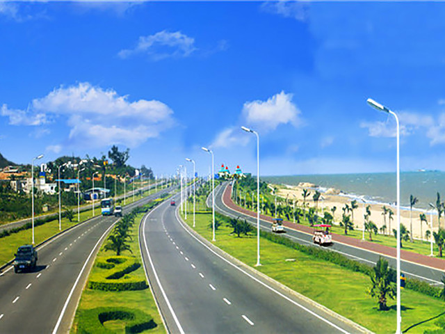

环岛路
|  |
景点介绍厦门环岛路全程43公里，路宽44~60米，为双向6车道，绿化带80~100米，是厦门市环海风景旅游干道之一。环岛路的建设一直奉行"临海见海，把最美的沙滩留给百姓"的宗旨，有的依山傍海，有的凌海架桥，有的穿石钻洞，建设起点高，标准严，充分体现了亚热带风光特色。 环岛路是一处观山望海听涛的带状景区。在环岛路向大海的一边，有"鼓浪屿之波"、"大海冥想曲"、"大橹诉说"、"选择"、"生机"、"海浪花"、"妈妈带我去游泳"、"马拉松雕塑"等不同风格的雕塑作品，围绕着大海这个中心，表现出厦门市勃勃生机。整条道路自然清新，品位高雅，美观大方。2000年，"东环望海"被评定为厦门新二十名景之一。其中从厦门大学到前埔的一段海岸，长约9公里，称为黄金海岸线，是集旅游、观光和休闲娱乐于一体的海滨绿色长廊。 |